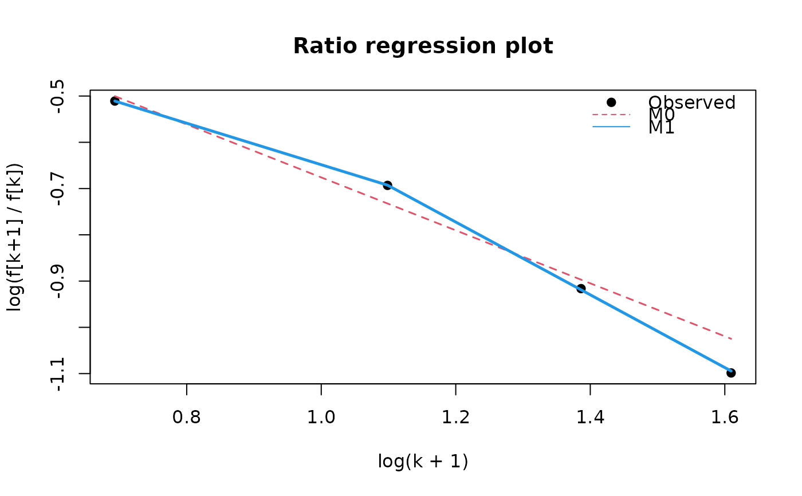

Fits the ratio-regression approach for single-source capture-recapture
count data as a standalone estimator. The regression is performed on
neighbouring marginal-frequency ratios rather than on unit-level counts,
which is why this method is separate from the singleRmodels() family
framework used by estimatePopsize().
Arguments
- formula
a formula identifying the observed count column. It must use
~ 1; for exampleobserved ~ 1.- data
a data frame or an object coercible to
data.frame.- ratioFormula
a one-sided formula used for the ratio regression on the derived ratio-level data. The default is
~ log(k + 1).- model
which ratio-regression model to use:
M0,M1, orautoto select between them bycriterion.- criterion
information criterion used when
model = "auto".- estimator
which population-size estimator should be treated as the primary one.
- weights
optional prior weights interpreted as multiplicities of observed units.
- subset
optional logical expression selecting rows from
data.- confint
either
"bootstrap"for percentile bootstrap intervals or"none"to skip interval estimation.- B
number of bootstrap replicates when
confint = "bootstrap".- seed
optional random seed used for bootstrap sampling.
- maxCount
optional upper support bound. Counts larger than
maxCountare discarded before fitting.- ...
additional arguments passed to
stats::model.frame().
Value
An object of class singleRRatioReg containing the fitted ratio-regression
models, model-selection criteria, derived ratio-level data, observed
frequencies, and population-size estimates.
Details
Let \(f_k\) denote the observed frequency of units captured exactly \(k\) times. Ratio regression models the neighbouring ratios \(r_k = f_{k + 1} / f_k\). The default model uses \(\log(r_k) = \beta_0 + \beta_1 \log(k + 1)\) and weighted least squares with weights \(1 / (1 / f_k + 1 / f_{k + 1})\).
Two published models are supported:
M0: ratio regression without one-inflation termM1: ratio regression with an additional one-inflation indicatorI(k == 1)
When model = "auto", both models are fitted and compared by criterion.
Population size can then be extracted either through the Horvitz-Thompson
(HT) or semi-parametric (SM) estimator, with estimator selecting which
one is treated as primary by popSizeEst(), summary(), and plot().
Bootstrap intervals are percentile intervals. For fixed model = "M0" or
model = "M1" the bootstrap uses zero-count imputation based on the
primary estimator. For model = "auto" it uses the single-bootstrap
reselection scheme where model selection is repeated inside each bootstrap
sample.
Examples
toy_counts <- data.frame(
observed = c(rep(1, 50), rep(2, 30), rep(3, 15), rep(4, 6), rep(5, 2))
)
toy_fit <- ratioReg(
observed ~ 1,
data = toy_counts,
model = "auto",
estimator = "SM",
confint = "none"
)
summary(toy_fit)
#>
#> Call:
#> ratioReg(formula = observed ~ 1, data = toy_counts, model = "auto",
#> estimator = "SM", confint = "none")
#>
#> Selected ratio regression model: M1
#> Selection criterion: AIC
#> Primary population estimator: SM
#> Observed population size: 103
#>
#> Model selection table:
#> model available logLik AIC BIC selected
#> M0 M0 TRUE 7.85 -9.701 -11.54 FALSE
#> M1 M1 TRUE 20.14 -32.284 -34.74 TRUE
#>
#> Coefficients for M0 :
#> (Intercept) log(k + 1)
#> -0.1035 -0.5724
#>
#> Coefficients for M1 :
#> (Intercept) log(k + 1) oneInflation
#> 0.1714 -0.7865 -0.1371
#>
#> Population size estimates:
#> estimator pointEstimate variance lowerBound upperBound
#> HT 139.7316 NA NA NA
#> SM 139.7308 NA NA NA
popSizeEst(toy_fit)
#> Point estimate: 139.7308
#> Variance: NA
#> 95% confidence intervals:
#> lowerBound upperBound
#> 1 NA NA
plot(toy_fit)

toy_tab <- aggregate(list(weight = rep(1, nrow(toy_counts))),
by = list(observed = toy_counts$observed),
FUN = sum)
ratioReg(
observed ~ 1,
data = toy_tab,
weights = toy_tab$weight,
model = "M0",
confint = "none"
)
#> Call: ratioReg(formula = observed ~ 1, data = toy_tab, model = "M0",
#> weights = toy_tab$weight, confint = "none")
#>
#> Selected ratio regression model: M0
#> Selection criterion: AIC
#> Primary population estimator: SM
#> Observed population size: 103
#>
#> Coefficients:
#> (Intercept) log(k + 1)
#> -0.1035021 -0.5723849
#>
#> Population size estimation results:
#> Point estimate: 157.869
#> Variance: NA
#> 95% confidence intervals:
#> lowerBound upperBound
#> 1 NA NA
#>
#> Alternative estimator point estimate: HT = 158.467